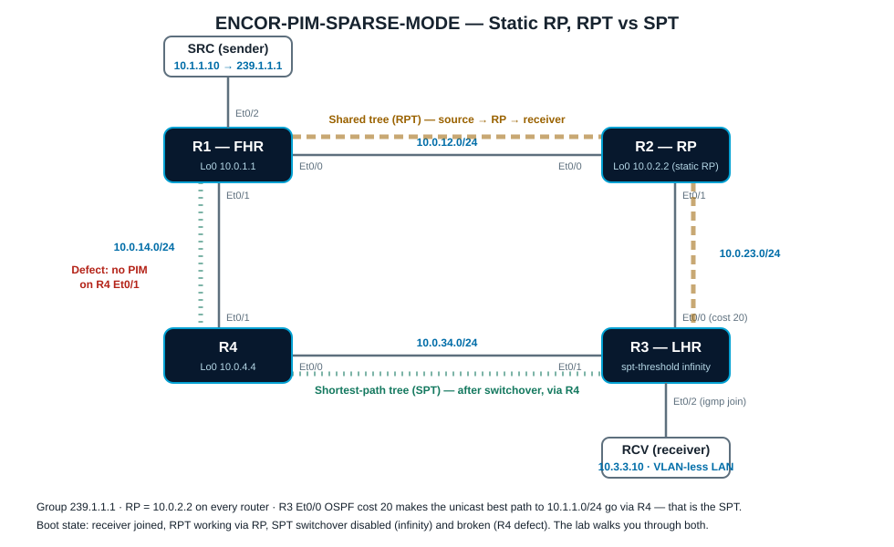

Overview
This lab makes PIM sparse mode visible. Four routers form a square: the source sits behind R1, the receiver behind R3, and R2 is the statically configured rendezvous point. You will watch show ip mroute change state through the three defining moments of PIM-SM: the receiver's (*,G) join up the shared tree, the source's unicast register to the RP, and the last-hop router's switchover from the shared tree (RPT) to the shortest-path tree (SPT).
The topology is rigged so the two trees take different physical paths: OSPF cost 20 on the R3–R2 link means R3 reaches the RP directly through R2, but its best unicast path to the source is via R4. One defect is baked in: the R4–R1 link is missing PIM, so the SPT switchover fails until you find and fix it.
Learning Objectives
- Configure and verify a static RP and PIM sparse-mode interfaces.
- Read (*,G) and (S,G) entries: incoming interface, RPF neighbor, and outgoing interface list.
- Explain the register process between the first-hop router and the RP.
- Trigger and observe the SPT switchover, including the RP-bit prune on the shared tree.
- Decode mroute flags: D, S, C, L, P, R, F, T, J.
- Troubleshoot a broken SPT with
show ip rpfandshow ip pim neighbor.
Platform Standard
- Use Cisco Modeling Labs IOL nodes (iol-xe) for every router in this lab.
ip multicast-routing distributedis preconfigured; if your image rejects thedistributedkeyword, useip multicast-routing.- R3 boots with
ip pim spt-threshold infinityso the shared tree stays in use until Task 4 — do not remove it early. - R3's receiver interface uses
ip igmp join-group 239.1.1.1, so R3 itself answers pings to the group — this makes verification deterministic. - Use
write memoryonly after the verification tasks pass.
Topology
R1–R2–R3–R4 form a square. The shared tree (RPT) runs source → R1 → R2 (RP) → R3. The shortest-path tree (SPT) runs R1 → R4 → R3 because of the OSPF cost on the R3–R2 link. The Alpine SRC host sends pings to 239.1.1.1; the Alpine RCV host is a capture point on the receiver LAN.

Addressing and Multicast Plan
| Element | Value | Notes |
|---|---|---|
| Group | 239.1.1.1 | Joined by R3 Et0/2 via ip igmp join-group |
| RP | 10.0.2.2 (R2 Loopback0) | ip pim rp-address 10.0.2.2 on all four routers |
| Source | SRC 10.1.1.10 (R1 Et0/2 LAN) | R1 is the first-hop router (FHR) |
| Receiver | RCV 10.3.3.10 (R3 Et0/2 LAN) | R3 is the last-hop router (LHR) |
| R1–R2 | 10.0.12.0/24 | RPT leg |
| R2–R3 | 10.0.23.0/24 | RPT leg — R3 side has OSPF cost 20 |
| R3–R4 | 10.0.34.0/24 | SPT leg |
| R4–R1 | 10.0.14.0/24 | SPT leg — PIM missing on R4 Et0/1 (defect) |
| Loopbacks | 10.0.1.1 / 10.0.2.2 / 10.0.3.3 / 10.0.4.4 | /32s, OSPF area 0 |
Task 1: Baseline Audit
Confirm the unicast and multicast control planes before generating any traffic. One PIM adjacency in the square is missing — find it now, but do not fix it until Task 4.
Requirements
- Verify full OSPF reachability: every router sees all four loopbacks and both LANs.
- Verify on R3 that the unicast best path to 10.1.1.0/24 (the source LAN) points at R4, while the best path to 10.0.2.2 (the RP) points at R2.
- List the PIM neighbors on every router and identify the link with no adjacency.
- Confirm every router agrees the RP for 239.1.1.1 is 10.0.2.2 (static).
Commands
show ip route ospf
show ip route 10.1.1.0
show ip route 10.0.2.2
show ip pim interface
show ip pim neighbor
show ip pim rp mappingExpected Findings
- R3's route to 10.1.1.0/24 exits Et0/1 toward R4 (total cost via R4 is lower than via the cost-20 link).
- R3's route to 10.0.2.2/32 exits Et0/0 toward R2.
- R4 and R1 have no PIM adjacency on the 10.0.14.0/24 link —
show ip pim interfaceon R4 does not list Et0/1. - All routers report
Group(s) 224.0.0.0/4, Staticwith RP 10.0.2.2.
Design note: RPF is computed from the unicast routing table, but PIM joins only propagate across PIM adjacencies. A perfect unicast path is useless to multicast if PIM is not enabled on it — that is exactly the trap waiting in Task 4.
Task 2: Watch the Shared Tree Build — (*,G)
R3's receiver interface already joined 239.1.1.1, so the (*,G) state exists at boot. Read it carefully on the LHR and the RP — this is the shared tree with no traffic on it yet.
Requirements
- On R3, confirm the IGMP membership for 239.1.1.1 on Et0/2.
- On R3, read the (*,G) entry: the incoming interface must be Et0/0 with RPF neighbor 10.0.23.2 (toward the RP), and the OIL must contain Et0/2.
- On R2 (the RP), confirm the (*,G) entry created by R3's PIM join: incoming Null (the RP is the root of the shared tree), OIL Et0/1.
- On R1 and R4, confirm there is no state for 239.1.1.1 yet — no receiver-driven state exists off the shared tree.
Commands
show ip igmp groups 239.1.1.1
show ip mroute 239.1.1.1
show ip pim rp mapping 239.1.1.1Expected Output (R3)
(*, 239.1.1.1), 00:12:44/00:02:31, RP 10.0.2.2, flags: SJCL
Incoming interface: Ethernet0/0, RPF nbr 10.0.23.2
Outgoing interface list:
Ethernet0/2, Forward/Sparse, 00:12:44/00:02:31Expected Output (R2, the RP)
(*, 239.1.1.1), 00:12:40/00:03:21, RP 10.0.2.2, flags: S
Incoming interface: Null, RPF nbr 0.0.0.0
Outgoing interface list:
Ethernet0/1, Forward/Sparse, 00:12:40/00:03:21Read the flags: on R3, S = sparse, J = join SPT on next packet (suppressed for now by spt-threshold infinity), C = connected member, L = the router itself joined (the igmp join-group). On R2, incoming Null is normal — the RP is the root of the shared tree.
Task 3: Source Registration and First Packets
Start the source and watch the register process create (S,G) state. With spt-threshold infinity still set on R3, traffic must flow source → R1 → R2 (RP) → R3, even though a shorter path exists.
Requirements
- From SRC, send a continuous ping to the group:
ping -t 32 239.1.1.1(the TTL flag matters — the Linux default multicast TTL of 1 dies at R1). Replies come from 10.3.3.1 (R3 joined the group). - On R1 (FHR), confirm the (S,G) entry with the
F(register) andTflags. - On R2 (RP), confirm the (S,G) entry and that the RP joined toward the source (incoming Et0/0 from R1).
- On R3, confirm traffic arrives on the shared tree: the (S,G) entry should NOT exist or shows the RPT path — incoming Et0/0 via the RP.
- Optional: on RCV, run
tcpdump -i eth0 host 239.1.1.1and watch the data arrive on the LAN.
Commands
show ip mroute 239.1.1.1
show ip mroute 239.1.1.1 count
show ip pim rp mapping
debug ip pim 239.1.1.1 ! optional, watch Register / Register-Stop on R1 and R2Expected Output (R1, the FHR)
(10.1.1.10, 239.1.1.1), 00:01:02/00:02:57, flags: FT
Incoming interface: Ethernet0/2, RPF nbr 0.0.0.0
Outgoing interface list:
Ethernet0/0, Forward/Sparse, 00:01:02/00:03:11Expected Output (R2, the RP)
(10.1.1.10, 239.1.1.1), 00:01:05/00:02:54, flags: T
Incoming interface: Ethernet0/0, RPF nbr 10.0.12.1
Outgoing interface list:
Ethernet0/1, Forward/Sparse, 00:01:05/00:03:18What just happened: R1 encapsulated the first packets in unicast PIM Register messages to 10.0.2.2. The RP decapsulated them, forwarded down the shared tree, sent an (S,G) join toward R1, and finally a Register-Stop once native traffic arrived. That whole exchange is exam material.
Task 4: SPT Switchover — and the Broken Path
Allow R3 to switch to the shortest-path tree. The switchover will fail first — receiver traffic stops — because the SPT path crosses the link with no PIM. Diagnose it, fix it, and watch the switchover complete.
Requirements
- On R3, remove
ip pim spt-threshold infinity. R3 immediately attempts an (S,G) join toward the source via R4. - Observe the failure: the SRC ping stops getting replies, and R3's (S,G) entry shows incoming Et0/1 (toward R4) but no traffic arrives.
- Diagnose with RPF and PIM neighbor checks on R4: the RPF interface toward 10.1.1.10 is Et0/1, but there is no PIM neighbor on it, so R4 cannot send the join to R1.
- Fix the defect: enable
ip pim sparse-modeon R4 Et0/1. - Confirm the switchover: R3's (S,G) shows incoming Et0/1 via 10.0.34.4 with flags
JT, traffic flows again, and the RP's path is pruned. - On R2, observe the RP-bit prune result: the (S,G) OIL toward R3 empties or the entry shows
P— the shared-tree leg for this source is no longer used.
Diagnostic Commands
show ip rpf 10.1.1.10
show ip pim neighbor
show ip mroute 239.1.1.1
show ip mroute 239.1.1.1 count ! run twice; counters must increaseExpected Output After the Fix (R3)
(10.1.1.10, 239.1.1.1), 00:00:31/00:02:58, flags: JT
Incoming interface: Ethernet0/1, RPF nbr 10.0.34.4
Outgoing interface list:
Ethernet0/2, Forward/Sparse, 00:00:31/00:03:12The exhibit-question version of this moment: (*,G) incoming Et0/0 toward the RP, (S,G) incoming Et0/1 toward the source, both on the same router. That difference — RPF to the RP vs RPF to the source — IS the shared tree vs shortest-path tree distinction.
Task 5: Flag Interpretation and Final Validation
Close the loop by proving you can read every line of the final mroute state — this is precisely what the exam shows in exhibits.
Requirements
- Capture
show ip mrouteon all four routers and explain every flag that appears: S, C, L, J, T, F, P, R, D. - Explain why R4 now carries (S,G) state but no (*,G) OIL entries.
- Stop the SRC ping, wait for the entries to age (3 minutes), and confirm the (S,G) state expires while the (*,G) shared-tree state remains.
- Restart the ping and watch registration + immediate SPT join happen together this time (no spt-threshold infinity).
Validation Commands
show ip mroute
show ip mroute summary
show ip mroute 239.1.1.1 count
show ip pim neighbor
show ip igmp groupsCompletion Criteria
- SRC pings 239.1.1.1 and gets replies from 10.3.3.1 over the SPT (R1 → R4 → R3).
- R3: (*,G) incoming via R2; (S,G) incoming via R4 with JT flags.
- R1: (S,G) with FT flags; R4: (S,G) transit state with T flag.
- R2: shared-tree (*,G) intact; (S,G) pruned or absent from the data path.
- All four PIM adjacencies are up, including R4–R1.
Grade Entire Lab
Use these checks to evaluate whether the lab is complete.
Solutions
Task 4 solution: enable the SPT switchover on R3
configure terminal
no ip pim spt-threshold infinity
endTask 4 solution: repair the SPT path (R4)
configure terminal
interface Ethernet0/1
ip pim sparse-mode
end
! Verify the new adjacency:
! R4#show ip pim neighbor
! 10.0.14.1 Ethernet0/1 ...Flag reference (memorize)
S - Sparse mode C - Connected member on this router
L - Local: router itself joined (igmp join-group)
J - Join SPT: switch to source tree on next packet
T - SPT bit: traffic received on the source tree
F - Register flag: FHR registering this source to the RP
P - Pruned: OIL is empty / Null
R - RP-bit: (S,G) entry applies to the shared tree
D - Dense mode (should never appear in this lab)Expected final verification
R3#show ip mroute 239.1.1.1
(*, 239.1.1.1), 01:02:10/stopped, RP 10.0.2.2, flags: SJCL
Incoming interface: Ethernet0/0, RPF nbr 10.0.23.2
Outgoing interface list:
Ethernet0/2, Forward/Sparse, 01:02:10/00:02:44
(10.1.1.10, 239.1.1.1), 00:04:18/00:02:51, flags: JT
Incoming interface: Ethernet0/1, RPF nbr 10.0.34.4
Outgoing interface list:
Ethernet0/2, Forward/Sparse, 00:04:18/00:02:44
R1#show ip mroute 239.1.1.1 | include flags
(*, 239.1.1.1), ... flags: SP
(10.1.1.10, 239.1.1.1), ... flags: FTLab complete: You watched a multicast flow live through its whole PIM-SM lifecycle — (*,G) join, unicast register, RP forwarding, SPT switchover, RP-bit prune — and repaired a broken source tree using RPF logic instead of guesswork.